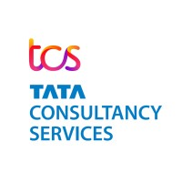

TATA CONSULTANCY SERVICES
INDIAN BANK Project Duration: [Nov 2022 – Dec 2023]
Roles: Developer, Team member.
- Project Description:
The project involved the development of banking screens and features for an Indian bank. The goal was to implement client-requested changes and enhancements while ensuring smooth functionality and compliance with existing systems.
Responsibilities
- Managed client change requests (CRs) by creating detailed functional specifications (FS) for new features.
- Developed backend components and ensured seamless integration with existing systems without affecting previous code functionality.
- Collaborated with the team to handle user acceptance testing (UAT) and production deployment phases.
- Played a key role in developing and maintaining Indian bank-specific screens, adhering to strict banking regulations and standards.
- Implemented coding best practices to ensure code stability and high performance in the production environment.
- Tools and Techniques: Putty, FileZilla, BeyondCompare, Oracle 19c.
Project:CENTRAL TRUST BANK
CENTRAL TRUST BANK Project Duration: [Jan 2024 – Present ]
Roles and Responsibilities: Engineer
Description:
- Developed and optimized application screens and validation processes according to client requirements, enhancing usability and reducing bug reports by 30%, thereby increasing user retention by 20%.
- Engineered user interfaces and implemented rigorous validation protocols for client-specific functionalities, resulting in a 25% reduction in user errors and a 40% increase in customer satisfaction.
- Streamlined API integration for seamless communication between frontend and backend systems.
- Developed RESTful APIs that facilitated seamless data exchange between clients and servers in a distributed environment.
- Managed efficient SQL queries and data transport.
- Integrated third-party APIs from external applications into web platforms.
- Tools and Techniques: FEE,Visual Studio Code, BeyondCompare,POSTMAN,WINScp,Mysql,Jile
Awards and Certificate
- On the Spot Team Award
- Xcelerate Warrior Certificate